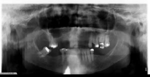

Procedure:
- When the patient moves during the exposure one may see disruption in the continuity of the inferior border of the mandible, especially in the molar region.
- Unsharpness may be seen throughout the vertical dimension of the image superior to the area of distortion of the inferior mandibular cortex.
- It should also be noted that a portion of the lead apron is visible in this image as well.
- Please refer to the image below for an example of a patient that moved during image acquisition.

|